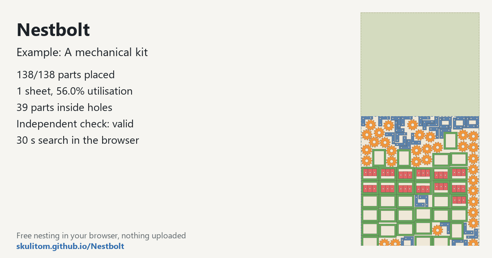

Nest a mechanical kit on a plywood sheet
This kit contains 138 brackets, cogs, frames and inserts on a full 1220 × 2440 mm plywood sheet. The frame windows provide space for inserts, making it a useful job for exploring part-in-part nesting alongside several different part types.
Free, MIT-licensed, no account; your files never leave your computer.
What this job asks for
The request has four types: 30 brackets, 33 cogs, 36 frames and 39 inserts. Most parts use quarter-turn rotations, but cogs have a free-rotation override. Keep that exception when trying the same request; the allowed angles are part of the job.
| Sheet (mm) | 1220 × 2440 |
|---|---|
| Margin | 5 mm |
| Part spacing | 1.5 mm |
| Edge spacing | 1.5 mm |
| Allowed rotations | 0°, 90°, 180°, 270°; cogs: free rotation |
| Part types and copies | 4 types; 138 copies: bracket × 30, cog × 33, frame × 36, insert × 39 |
| Time budget | 30 seconds |
Measured layout
Measured on 2026-10-20 with the build this site hosts (main at c9b0176), in a headless Chromium browser on a desktop PC, with the example’s own settings: the 30-second search placed 138 of 138 parts on one sheet, 39 of them inside the holes of other parts, with 56.0% utilisation and material 0.565 sheets, and left a clear 1220 × 1068 mm offcut at the top of the sheet. The independent check: valid. Results vary a little between runs and computers, because the search stops at its time limit.

Try it yourself
Open the app, click the button “Try an example: a mechanical kit”; it loads the drawing and starts nesting straight away. Or download the mechanical drawing and drop it in. Use the settings above, including the cog override and the quantities for each type.

Review the frame windows in the live best layout and the clear offcut above the parts. Nestbolt compresses the last sheet towards one end to keep the offcut usable. Its independent validator checks the requested spacing, containment, rotations and quantities as well as overlap.
Use your own file
- Identify closed outlines and their holes during import review so that windows remain available for smaller parts.
- Set quantities for each type separately. Frames and inserts do not have the same requested count in this example.
- Review rotation permissions per part. A free-rotation allowance for cogs need not mean that brackets or frames can rotate freely too.
The example's 1.5 mm part and edge spacing and 5 mm margin are supplied job settings. Choose the corresponding values for your own job and review its exported SVG or DXF in your cutting workflow.
Source and licence
The mechanical drawing was generated by Nestbolt scripts and is MIT licensed. See the drawing credits and MIT licence. Nestbolt gives no machine-safety or fit certification.